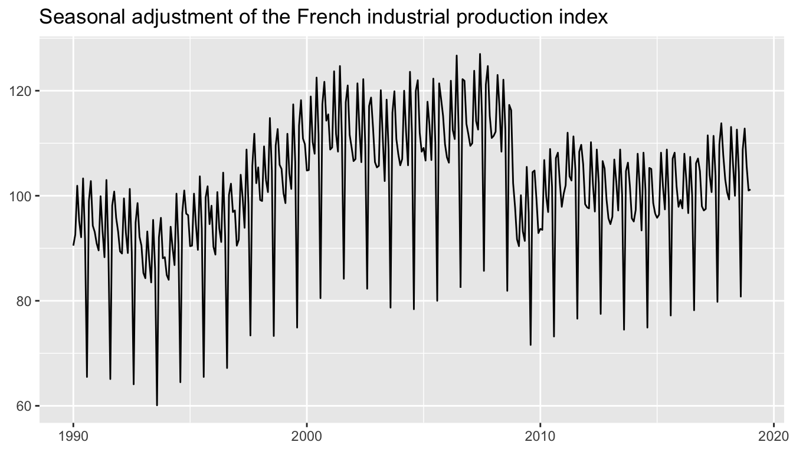
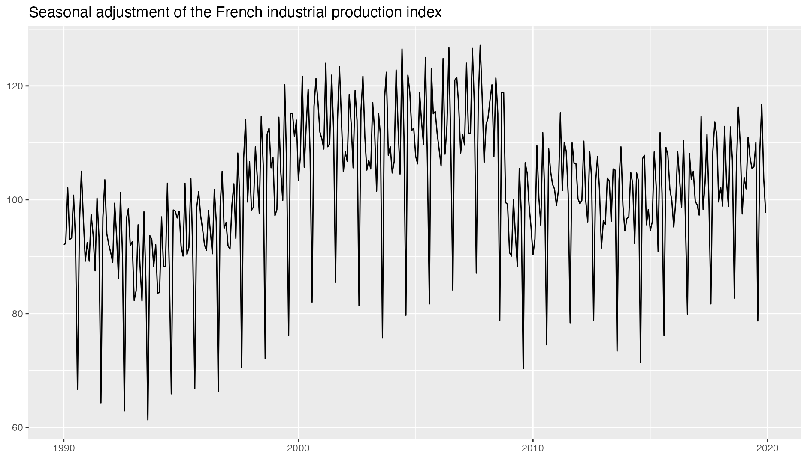
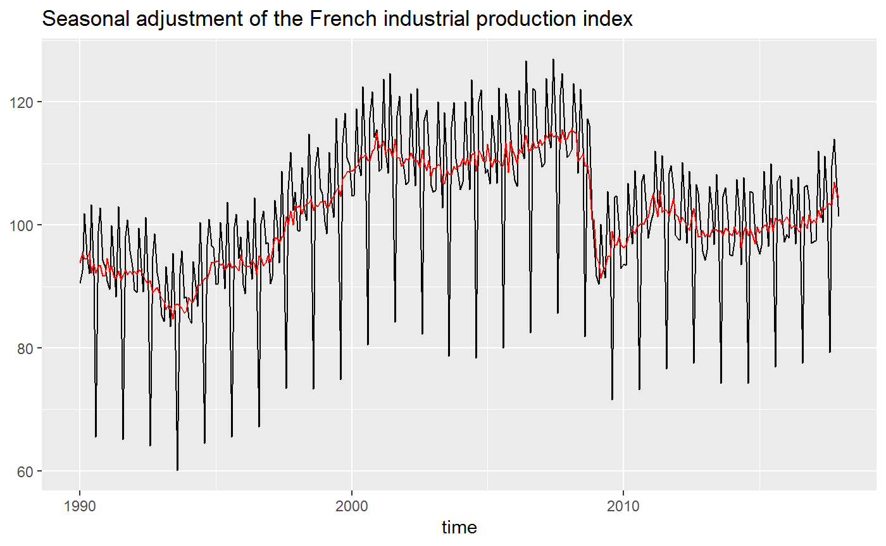
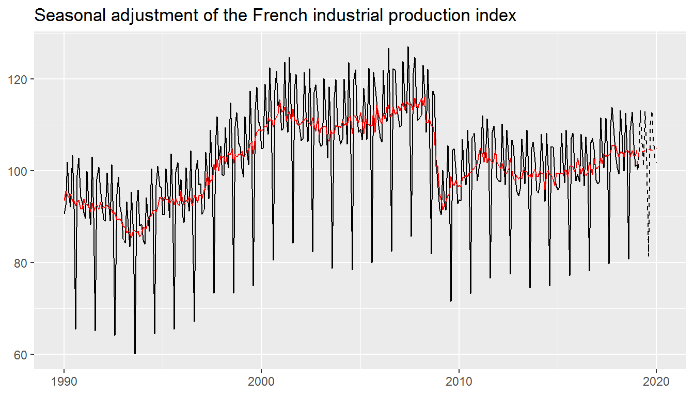
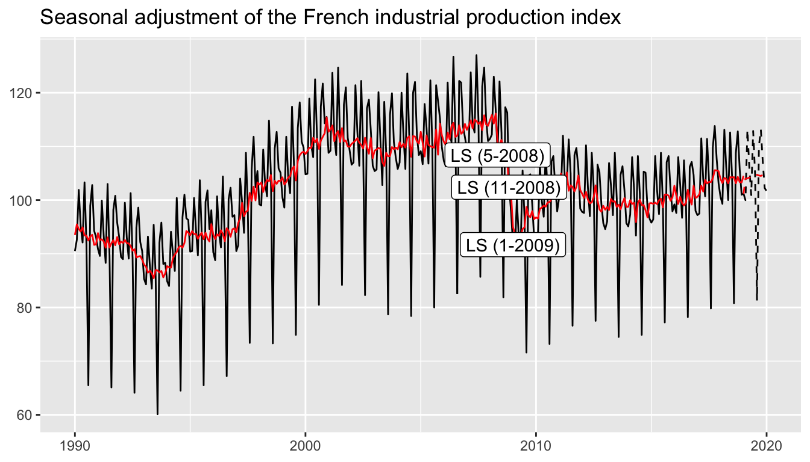
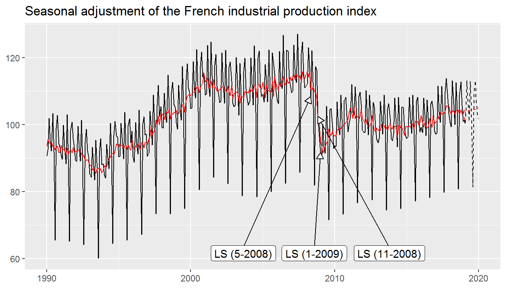
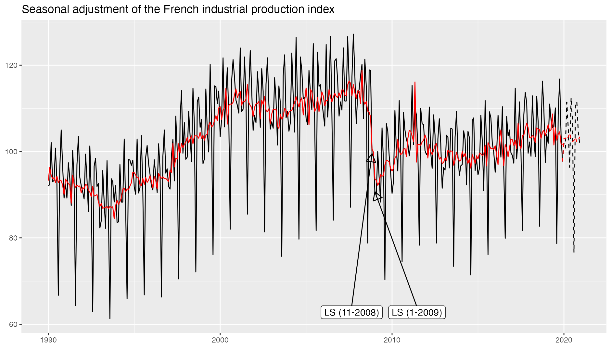
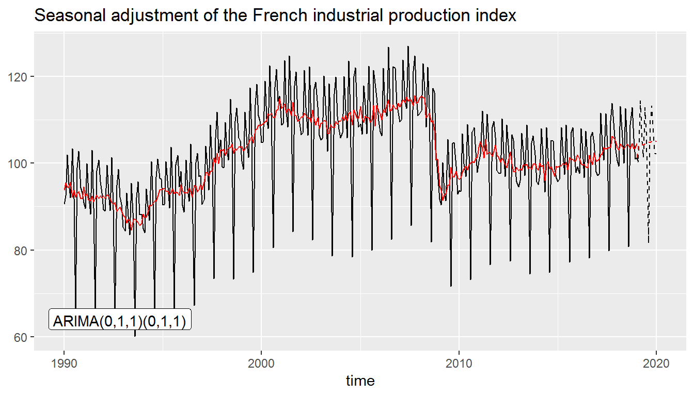
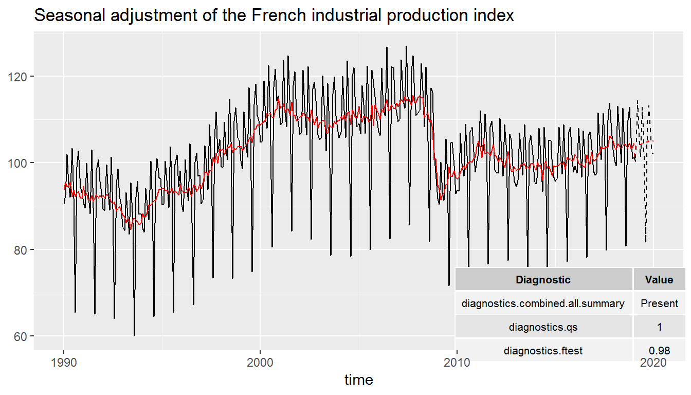

vignettes/ggdemetra.Rmd
ggdemetra.Rmdggdemetra is an extension of ggplot2 to add seasonal adjustment statistics to your plots. The seasonal adjustment process is done with (RJDemetra)[https://github.com/jdemetra/rjdemetra] that is an R interface to JDemetra+, the seasonal adjustment software officially recommended to the members of the European Statistical System (ESS) and the European System of Central Banks. RJDemetra implements the two leading seasonal adjustment methods TRAMO/SEATS+ and X-12ARIMA/X-13ARIMA-SEATS.
Thera are 4 main functionnalities in ggdemetra depending of what you want to add in the graphic:
geom_sa(): to add a time series compute during the seasonal adjustment (the trend, the seasonal adjusted time series, etc.).geom_text_outliers()/geom_label_outliers()/geom_text_repel_outliers()/ geom_label_repel_outliers(): to add the outliers used in the pre-adjustment process of the seasonal adjustment.geom_text_arima()/geom_label_arima(): to add the ARIMA model used in the pre-adjustment process of the seasonal adjustment.geom_diagnostics(): to add a table containing some diagnostics on the seasonal adjustment process.All the functions have some common parameters and especially those to defined the seasonal adjustment method:
method is the method used for the seasonal adjustment: X-13ARIMA (method = "x13", the default) or TRAMO-SEATS (method = "tramoseats").spec is the seasonal adjustment specification. It can be the name of pre-defined specification (see ?RJDemetra::x13 or ?RJDemetra::tramoseats) or a user-defined specification created by RJDemetra (by RJDemetra::x13_spec or RJDemetra::tramoseats_spec).frequency is the frequency of the input time series. By default, the frequency is computed and a message is printed with the one chosen (use message = FALSE to suppress this message).In the following examples, the default seasonal adjustment specification will be used on the French industrial production index:
library(RJDemetra)
library(ggdemetra)
#> Le chargement a nécessité le package : ggplot2
#> Warning: le package 'ggplot2' a été compilé avec la version R 3.5.2
data <- data.frame(x = as.numeric(time(ipi_c_eu)),
y = as.numeric(ipi_c_eu[, "FR"]))
p_ipi_fr <- ggplot(data = data, mapping = aes(x = x, y = y)) +
geom_line() +
labs(title = "Seasonal adjustment of the French industrial production index",
x = "time", y = NULL)
p_ipi_fr
geom_sa()
By default geom_sa() adds the seasonal adjusted time series:

To add other components of the seasonal adjustment, use the component parameter of geom_sa() (see ?RJDemetra::user_defined_variables() for the availables parameters). For example, to add the forecasts of the input data and of the seasonal adjusted series:
p_sa <- p_ipi_fr +
geom_sa(component = "y_f", linetype = 2, message = FALSE) +
geom_sa(component = "sa", color = "red", message = FALSE) +
geom_sa(component = "sa_f", color = "red", linetype = 2, message = FALSE)
p_sa
There are four functions to add to the plot the names of the outliers used in the pre-adjustment process:
geom_text_outliers() adds directly the names of the outliers and geom_label_outliers() draws a rectangle behind the names, making them easier to read.geom_text_repel_outliers() and geom_label_repel_outliers() do the same but text labels repel away from each other and away from the data points (see ?ggrepel::geom_label_repel).In our example, there are three outliers:

They can be plotted in more readable way using the parameters of ggrepel::geom_label_repel:
p_sa +
geom_label_repel_outlier(message = FALSE,
vjust = 4,
ylim = c(NA, 65), force = 10,
arrow = arrow(length = unit(0.03, "npc"),
type = "closed", ends = "last"))
Use the parameters first_date and last_date to only have the outliers in a precise time interval. For example, to only plot the outliers from 2009 use first_date = 2009:
p_sa +
geom_label_repel_outlier(message = FALSE,
first_date = 2009,
vjust = 4,
ylim = c(NA, 65), force = 10,
arrow = arrow(length = unit(0.03, "npc"),
type = "closed", ends = "last"))
geom_label_arima()
The ARIMA model used pre-adjustment process can be added to the plot with geom_text_arima() or geom_label_arima() (that draws a rectangle behind the ARIMA model, making them easier to read):

geom_diagnostics()
A table with some diagnostics on the seasonal adjustment process can be added with geom_diagnostics(). The desired diagnostics have to be added to the diagnostics parameter (see ?RJDemetra::user_defined_variables() for the availables diagnostics). For example, to add the result of the X-11 combined test and the p-values of the residual seasonality qs and f tests:
diagnostics <- c("diagnostics.combined.all.summary", "diagnostics.qs", "diagnostics.ftest")
p_sa +
geom_diagnostics(diagnostics = diagnostics,
ymin = 58, ymax = 72, xmin = 2010,
table_theme = gridExtra::ttheme_default(base_size = 8),
message = FALSE)
To customize the names of the diagnostics in the plot, pass a named vector to the diagnostics parameter:
diagnostics <- c(`Combined test` = "diagnostics.combined.all.summary",
`Residual qs-test (p-value)` = "diagnostics.qs",
`Residual f-test (p-value)` = "diagnostics.ftest")
p_sa +
geom_diagnostics(diagnostics = diagnostics,
ymin = 58, ymax = 72, xmin = 2010,
table_theme = gridExtra::ttheme_default(base_size = 8),
message = FALSE)